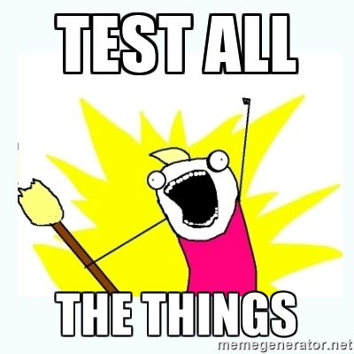

Tales of the sea
resurface.io blog
resurface.io blog
Sinatra support, plus a number of smaller fixes and improvements. No changes to API compatibility with 1.6.x.
Major changes:
For Java logger:
For Ruby logger:
NOTE: 1.x releases are alpha quality and should not be used in production.
Posted Dec 6 2016 by Rob
This survey claims data preparation accounts for about 80% of the work of data scientists. No shock this is the least enjoyable part of the job!
Data scientists spend most of their time cleaning data (on reddit)
Posted Dec 1 2016 by Rob
Automated integration tests for all supported environments, using Capybara, PhantomJS and Poltergeist.

From the start we’ve had good automated unit tests, but when it comes to testing with real applications, we’ve been manually following our README instructions for each logger & environment just like anybody who finds us on GitHub. This has produced good results, but as the number of supported environments has grown, this has become a headache.
With this milestone, there is a new set of integration tests (resurfaceio/resurfaceio-logger-tests) that exercise all loggers. These tests are written in Ruby, and use real live environments (rather than mocks) to try out the latest snapshot build of each logger. It takes ~15 minutes and valid Heroku credentials to run all these tests. Unit tests present in each logger were unchanged.
Why standardize on Ruby for integration tests? Because Ruby is a good tool for this job. It's easy to call system commands through backticks, while wrapping those operations in exception handlers and closures. Using a headless browser that can run JavaScript (Capybara+Poltergeist+PhantomJS) makes it easy to drive test applications. And in the end these Ruby test fixtures are quite small and readable and easy to maintain.
Major changes:
For all loggers:
NOTE: 1.x releases are alpha quality and should not be used in production.
Posted Aug 18 2016 by Rob
There was a truly awesome blog post by Grant Ammons recently extoling the virtues of side projects. He adeptly makes the case for having a side project for the pure fun of self-improvement. It's a post I really wish I had writen myself...but I was far too busy working on my side project. :-)
The life-changing benefits of side projects
Posted Jul 21 2016 by Rob
Send logging messages to any HTTPS URL that accepts a JSON POST, plus new environment variables to control operations.
Major changes:
For all loggers:
NOTE: 1.x releases are alpha quality and should not be used in production.
Posted Jul 3 2016 by Rob
Logging request method and request/response headers, plus some minor refactorings.
Major changes:
For all loggers:
For Java logger:
For Ruby logger:
NOTE: 1.x releases are alpha quality and should not be used in production.
Posted Jun 14 2016 by Rob
Logging body content from POST requests.
For Java logger:
For Ruby logger:
NOTE: 1.x releases are alpha quality and should not be used in production.
Posted May 15 2016 by Rob
Added request/response implementation classes, for easy mocking and manual use.
New classes:
Other changes:
NOTE: 1.x releases are alpha quality and should not be used in production.
Posted Apr 24 2016 by Rob
When starting this project, I had no idea where this might lead. I was unemployed, hungry to start my own venture, but without product or revenue primed and ready. I'm once again a working stiff with a day job, but this has been too much fun not to keep going. As paying the bills is no longer a concern, we'll be sharing all project source code (warts and all) on GitHub moving forward.
I've always thought that any resurface.io libraries to be bundled with a customer application should be open source. That's what I prefer for my own apps, not for philosophical reasons, but from real frustrations dealing with opaque commercial libraries. I have no problem with proprietary software, but any code I integrate with my app then becomes my responsibility to my customers. Having access to sources allows me to troubleshoot when things go wrong, and maybe to contribute an improvement or two along the way.
But we're not just sharing library sources, we're now sharing everything, including sources for this website and other project materials. It just seems wrong to hold back, when we had always planned to share big portions of our codebase anyway. This doesn't preclude having some commercial components way down the road. This does preclude licensing-driven revenue models that aren't very interesting anyway. So let's share all the code, why not?
Posted Apr 8 2016 by Rob
Yahoo did something honorable last week in releasing their R10 Yahoo News Feed dataset, the largest public dataset of its kind ever released. (so went the headlines) At first I was excited that it might provide good patterns to follow. Not so much!
Again, Yahoo deserves praise for doing something admirable here...I think anyway. I can't be sure because Yahoo is restricting access to academic researchers only. I'm certainly not the only independent researcher to find this restriction lame, but that's not the sole complaint.
Beyond Yahoo's description on their blog, there apparently exists a readme file that provides more technical information, but it's buried in part 1 of this massive download. Having to download a big tarball just to access a tiny readme file is uncool. If there is a detailed schema of the data, that would be worth seeing without too much trouble.
If technical details aren't forthcoming, at least provide some sample data, which can be totally fake and lawsuit-free. The dataset has to be chunked up anyway for downloading. Hard to imagine that a few laptop-sized chunks couldn't be carved off safely for use by the general public. Even a few examples in text might help to see if the dataset is worth exploring.
And what about metadata? Starting with metadata about the parts of the download. Let me grab the readme, schema, sample data and metadata in a small package, and then start in on big chunks of data.
And why a big download at all? (as opposed to EBS snapshot or the like?)
Again, I don't mean impune the fine folks at Yahoo. But I can't help thinking that an archive half the size but twice as open and self-descriptive would have been better.
Posted Jan 27 2016 by Rob
There was a really great post by the staff at Quartz last month that I missed somehow. It details 43 different ways that your dataset could need fixing. Though written from a reporter's perspective, it's a great checklist for anybody working with datasets.
'The Quartz guide to bad data' on GitHub
Posted Jan 23 2016 by Rob
I love Bootstrap. I love putting together a quick polished UI without having to fight browser quirks. So I reach for Bootstrap, Bootswatch themes, and PNotify (Bootstrap-friendly notifications) whenever possible. As I'm usually using these libraries together, why not treat them as a single unit?
I'm going to have to maintain this "distribution" whether I choose to give it a name or share it. I'll be upgrading and testing those components together as a unit either way. A single bundle would help me in building multiple sites even if it's not a huge help to anybody else. Granted this distribution is arguably lame...it doesn't introduce anything new, just bundles existing code. Should I really bother to share this?
In my mind, yes. There's no extra cost associated with sharing, especially as GitHub provides public repos for free. I might save somebody a little time. I might have ideas to tweak or customize down the road, making this distribution less generic and more interesting. In a larger sense, this is a precedent for how we intend to participate in the open-source community. Are we contributors, or just lurkers? Let's err toward contributing!
Posted Jan 20 2016 by Rob
Starting a business has been my quiet dream for a while now. Not for lack of enjoyment in my work in recent years, far from it. My last company (Xaffire) was a great ride. We went from tiny startup (20 people) to part of Quest Software (4k people) to part of Dell (>100k people). I grew to love working as part of an international team, having the freedom to follow my own research, and representing my group at public events. All this conspired to keep the dream of my own business on the back burner...but that couldn't last forever.
Dell is a big company in big transition, and I was laid off (as part of a much larger layoff) in November 2015. It was a bit of a shock initially, but no hard feelings. I have many friends at Dell for whom I wish the best. If this event is what put me on track to owning my own business, I'm grateful for it.
Obviously a lot has changed in the decade since Xaffire was a startup. Monitoring/logging tools that rely on packet sniffing (like TeaLeaf, Coradiant, and Xaffire) have seen their time in the sun dimmed by surging numbers of cloud deployments. Newer user recording tools (like Clicktale, Inspectlet, and Lucky Orange) are available for customers running in cloud environments. At this point, it is a leap of faith that resurface.io can carve out a distinct niche, but obvious that doing so requires a re-think from first principles.
So I find myself starting from scratch: without any other contributors, without any inventions or intellectual property, without any intent to violate agreements to my former employer, and without any really firm ideas yet about positioning or implementation or go-to-market strategy. All I have is a domain name, an exceedingly vague tagline, and the drive to explore what comes next. This could be a stroke of genius, or utter folly...but you gotta start somewhere, right?
Posted Jan 13 2016 by Rob